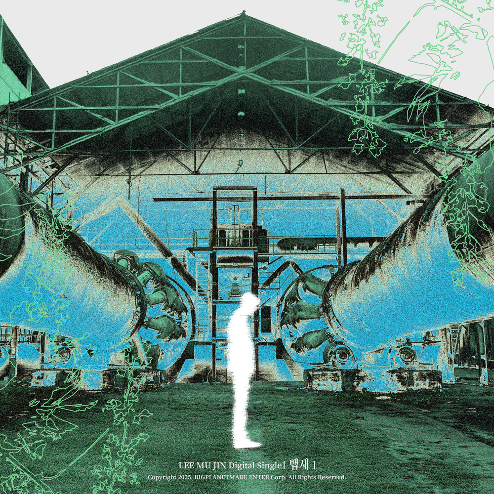

안녕하세요, 라보엠입니다.
오늘은 싱어송라이터 이무진이 2025년 5월 27일 발표한 디지털 싱글 ‘뱁새’를 소개하겠습니다. 이 곡은 이무진이 직접 작사, 작곡에 참여해, 상실의 감정과 그 이후의 내면을 섬세하게 그려낸 작품입니다. ‘청춘만화’로 청춘의 찬란함을 노래했던 그가, 이번에는 한층 더 깊어진 감성으로 삶의 무게와 포기, 그리고 그 속에서 피어나는 위로를 담아냈습니다.
작고 무력한 새, ‘뱁새’에 담긴 의미
‘뱁새’는 오래전부터 ‘뱁새가 황새 쫓아가다 가랑이 찢어진다’는 속담에서처럼, 작고 힘없는 존재의 상징처럼 여겨졌습니다. 하지만 이무진이 그려낸 ‘뱁새’는 누군가를 쫓아가다 지치는 모습이 아니라, 최선을 다했지만 결국 포기해야만 했던 순간, 홀로 남겨진 이의 마음을 투영합니다.
노래는 “이대로 끝나버린대도 괜찮아”, “사랑하지 않을 만큼 후회했잖아”와 같은 가사로, 상실을 받아들이며 담담하게 자신을 위로하는 태도를 보여줍니다.
드라마틱한 밴드 사운드와 새로운 음악적 시도
‘뱁새’는 기존 이무진의 밝고 경쾌한 무드에서 벗어나, 드라마틱하게 전개되는 밴드 사운드가 중심을 이룹니다. 폐공장, 기찻길, 텅 빈 도심 외곽 등 적막한 공간을 유랑하는 이무진의 모습을 담은 뮤직비디오는 곡의 쓸쓸함과 상실감을 시각적으로도 극대화합니다.
이번 곡에서 이무진은 한층 더 깊어진 감정의 스펙트럼과 함께 비주얼적으로도 새로운 변신을 시도해, 음악적 성장과 변화를 보여줍니다.
청춘을 위한 위로와 공감
‘뱁새’는 최선을 다했지만 끝내 무너져버린, 그리고 그 자리에 홀로 남겨진 모든 이들을 위한 노래입니다. 이무진은 “상실감을 주제로 노래하고 싶은 갈증이 있었는데, 이번 곡을 통해 외면해온 감정과 마주할 수 있었다”고 밝히기도 했습니다.
이 곡은 단순히 슬픔에 머무르지 않고, 절망의 끝에서도 자신을 다독이고 다시 일어설 수 있는 용기를 전합니다.
특히 “모두 날 떠나버린대도 괜찮아”라는 가사는, 외로움 속에서도 스스로를 위로하는 이무진만의 따뜻한 시선을 느끼게 합니다.
가사와 음악에서 느껴지는 깊은 상실감
이 곡의 가사는 단순한 절망이 아니라, 모든 것을 쏟아부었기에 더 이상 후회도, 미련도 남지 않은 상태를 그려냅니다. “끝까지 하면 된다는 말이, 때때론 끝까지 틀리는 때도 때때론”이라는 구절은, 노력의 끝에 도달한 이들이 느끼는 허탈함과 현실을 담백하게 드러냅니다.
이무진 특유의 섬세한 언어와 여백이 있는 보컬이 어우러져, 한 사람의 무너진 내면과 그 속에 남은 복잡한 감정들을 고스란히 전달합니다. 상실 이후에도 무너지지 않으려 애쓰는 마음, 그리고 그 안에서 발견하는 작은 위로가 곡 전체를 관통합니다.
맺음말
이무진의 ‘뱁새’는 상실과 포기의 순간, 그 안에서 피어나는 조용한 위로를 노래하고 있습니다. 밝고 경쾌했던 이전 곡들과 달리, 이번에는 한층 더 깊고 진한 감성으로 청춘의 아픔을 어루만집니다. 오늘 하루, 마음 한켠이 무너진 것만 같은 날, 이무진의 ‘뱁새’를 들으며 잠시 자신의 감정을 솔직하게 마주해보세요. 이 곡이 여러분의 슬픔에 작은 위로가 되길 바라며 추천드립니다.
